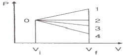
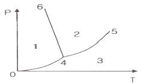
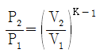
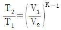
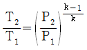
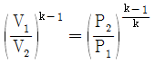

에너지관리산업기사 (2019-09-21 기출문제)
1과목: 열역학 및 연소관리
1. 다음 중 모리엘 (Mollier)선도를 이용할 때 가장 간단하게 계산할 수 있는 것은?
- 터빈효율 계산
- 엔탈피 변화 계산
- 사이클에서 압축비 계산
- 증발시의 체적 증가량 계산
(정답률: 84%)

2. 액체연료의 특징에 대한 설명으로 틀린 것은?
- 수송과 저장이 편리하다.
- 단위 중량에 대한 발열량이 석탄보다 크다.
- 인화, 역화 등 화재의 위험성이 없다.
- 연소 시 매연이 적게 발생한다.
(정답률: 76%)
3. 탄소(C) 1 kg을 완전히 연소시키는 데 요구되는 이론산소량은 몇 Nm3 인가?
- 1.87
- 2.81
- 5.63
- 8.94
(정답률: 70%)
4. 오토사이클에 대한 설명으로 틀린 것은?
- 일정 체적 과정이 포함되어 있다.
- 압축비가 클수록 열효율이 감소한다.
- 압축 및 팽창은 등엔트로피 과정으로 이루어진다.
- 스파크 점화 내연기관의 사이클에 해당된다.
(정답률: 75%)
5. 연돌의 통풍력에 관한 설명으로 틀린 것은?
- 일반적으로 직경이 크면 통풍력도 크게 된다.
- 일반적으로 높이가 증가하면 통풍력도 증가한다.
- 연돌의 내면에 요철이 적은 쪽이 통풍력이 크다.
- 연돌의 벽에서 배기가스의 열방사가 많은 편이 통풍력이 크다.
(정답률: 66%)
6. 용기내부에 증기 사용처의 증기 압력 또는 열수 온도보다 높은 압력과 온도의 포화수를 저장하여 증기 부하를 조절하는 장치를 무엇이라고 하는가?
- 기수분리기
- 스팀 어큐뮬레이터
- 스토리지 탱크
- 오토 클레이브
(정답률: 84%)
7. 그림은 초기 체적이 Vi 상태에 있는 피스톤이 외부로 일을 하여 최종적으로 체적이 Vf 인 상태로 된 것을 나타낸다. 외부로 가장 많은 일을 한 과정은?

- 0 – 1 과정
- 0 – 2 과정
- 0 – 3 과정
- 0 – 4 과정
(정답률: 84%)
8. 물질을 연소시켜 생긴 화합물에 대한 설명으로 옳은 것은?
- 수소가 연소했을 때는 물로 된다.
- 황이 연소했을 때는 황화수소로 된다.
- 탄소가 불완전 연소했을 때는 이산화탄소가 된다.
- 탄소가 완전 연소했을 때는 일산화탄소가 된다.
(정답률: 81%)
9. 분사컵으로 기름을 비산시켜 무화하는 버너는?
- 유압분무식
- 공기분무식
- 증기분무식
- 회전분무식
(정답률: 73%)
10. 랭킨사이클에서 단열과정인 것은?
- 펌프
- 발전기
- 보일러
- 복수기
(정답률: 73%)
11. 다음 그림은 물의 압력-온도 선도를 나타낸 것이다. 액체와 기체의 혼합물은 어디에 존재하는가?

- 영역 1
- 선 4 – 6
- 선 0 – 4
- 선 4 – 5
(정답률: 83%)
12. 일을 할 수 있는 능력에 관한 법칙으로 기계적인 일이 없이는 스스로 저온부에서 고온부로 이동할 수 없다는 법칙은?
- 열역학 제0법칙
- 열역학 제1법칙
- 열역학 제2법칙
- 열역학 제3법칙
(정답률: 72%)
13. 보일러 매연의 발생 원인으로 틀린 것은?
- 연소 기술이 미숙할 경우
- 통풍이 많거나 부족할 경우
- 연소실의 온도가 너무 낮을 경우
- 연료와 공기가 충분히 혼합된 경우
(정답률: 82%)
14. 다음 연료 중 고위발열량이 가장 큰 것은? (단, 동일 조건으로 가정한다.)
- 중유
- 프로판
- 석탄
- 코크스
(정답률: 80%)
15. 엔탈피는 다음 중 어느 것으로 정의되는가?
- 과정에 따라 변하는 양
- 내부 에너지와 유동 일의 합
- 정적 하에서 가해진 열량
- 등온하에서 가해진 열량
(정답률: 79%)
16. 이상기체의 가역단열변화에 대한 식으로 틀린 것은? (단, k는 비열비이다.)




(정답률: 57%)
17. 정상유동과정으로 단위시간당 50℃의 물 200 kg과 100℃ 포화증기 10kg을 단열된 혼합실에서 혼합할 때 출구에서 물의 온도(℃)는? (단, 100℃ 물의 증발잠열은 2250 kJ/kg이며, 물의 비열은 4.2 kJ/kg·K이다.)
- 55.0
- 77.3
- 77.9
- 82.1
(정답률: 41%)
18. C(87%), H(12%), S(1%)의 조성을 가진 중유 1kg을 연소시키는 데 필요한 이론공기량은 몇 Nm3/kg 인가?
- 6.0
- 8.5
- 9.4
- 11.0
(정답률: 44%)
19. 연소 시 일반적으로 실제공기량과 이론공기량의 관계는 어떻게 설정하는가?
- 실제 공기량은 이론공기량과 같아야 한다.
- 실제 공기량은 이론공기량보다 작아야 한다.
- 실제 공기량은 이론공기량보다 커야 한다.
- 아무런 관계가 없다.
(정답률: 78%)
20. 카르노사이클의 작동순서로 알맞은 것은?
- 등온팽창 → 단열팽창 → 등온압축 → 단열압축
- 등온팽창 → 등온압축 → 단열팽창 → 단열압축
- 등온압축 → 등온팽창 → 단열팽창 → 단열압축
- 단열압축 → 단열팽창 → 등온팽창 → 등온압축
(정답률: 73%)
2과목: 계측 및 에너지진단
21. 물 20 kg을 포화증기로 만들려고 한다. 전열효율이 80%일 때, 필요한 공급 열량(kJ)은? (단, 포화증기 엔탈피는 2780 kJ/kg, 급수 엔탈피는 100 kJ/kg이다.)
- 53600
- 55500
- 67000
- 69400
(정답률: 52%)
22. 물체의 탄성 변위량을 이용한 압력계가 아닌 것은?
- 다이어프램식 압력계
- 경사관식 압력계
- 부르동관식 압력계
- 벨로스식 압력계
(정답률: 80%)
23. 배가스 중 산소농도를 검출하여 적정 공연비를 제어하는 방식을 무엇이라 하는가?
- O2 Trimming 제어
- 배가스 온도 제어
- 배가스량 제어
- CO 제어
(정답률: 85%)
24. 잔류편차(off-set)가 있는 제어는?
- P 제어
- I 제어
- PI 제어
- PID 제어
(정답률: 76%)
25. 배관의 열팽창에 의한 배관 이동을 구속 또는 제한하는 레스트레인트의 종류에 속하지 않는 것은?
- 스토퍼(stopper)
- 앵커(anchor)
- 가이드(guide)
- 서포트(support)
(정답률: 72%)
26. 다음 중 열량의 계량단위가 아닌 것은?
- J
- kWh
- Ws
- kg
(정답률: 77%)
27. 진동이 일어나는 장치의 진동을 억제시키는데 가장 효과적인 제어동작은?
- on-off 동작
- 비례 동작
- 미분 동작
- 적분 동작
(정답률: 60%)
28. 측정기로 여러 번 측정할 때 측정한 값의 흩어짐이 작으면, 즉 우연오차가 작다면 이 측정기는 어떠한가?
- 정밀도가 높다.
- 정확도가 높다.
- 감도가 좋다.
- 치우침이 적다.
(정답률: 70%)
29. 가스 분석을 위한 시료채취 방법으로 틀린 것은?
- 시료채취 시 공기의 침입이 없도록 한다.
- 가능한 한 시료 가스의 배관을 짧게 한다.
- 시료 가스는 가능한 한 벽에 가까운 가스를 채취한다.
- 가스성분과 화학성분을 일으키는 배관재나 부품을 사용하지 않는다.
(정답률: 79%)
30. 보일러 효율시험 측정 위치(방법)에 대한 설명으로 틀린 것은?
- 연료 온도 – 유량계 전
- 급수 온도 – 보일러 출구
- 배기가스 온도 – 전열면 출구
- 연료 사용량 – 체적식 유량계
(정답률: 66%)
31. 비접촉식 광전관식 온도계의 특징으로 틀린 것은?
- 연속 측정이 용이하다.
- 이동하는 물체의 온도 측정이 용이하다.
- 응답 속도가 빠르다.
- 기록제어가 불가능하다.
(정답률: 81%)
32. 다음 중 압력의 계량 단위가 아닌 것은?
- N/m2
- mmHg
- mmAq
- Pa/cm2
(정답률: 65%)
33. 유체의 압력차를 일정하게 유지하고 유체가 흐르는 단면적을 변화시켜 유량을 측정하는 계측기는?
- 오리피스
- 플로우 노즐
- 벤투리미터
- 로터미터
(정답률: 64%)
34. 보일러의 열정산 조건으로 가장 거리가 먼 것은?
- 측정 시간은 최소 30분으로 한다.
- 발열량은 연료의 총발열량으로 한다.
- 증기의 건도는 0.98 이상으로 한다.
- 기준 온도는 시험 시의 외기 온도를 기준으로 한다.
(정답률: 69%)
35. 모세관 상부에 수은을 고이게 하여 측정온도에 따라 수은의 양을 조절하여 0.01℃까지 정도가 좋은 온도계로 열량계에 많이 사용하는 것은?
- 색온도계
- 저항온도계
- 베크만 온도계
- 액체 압력식 온도계
(정답률: 78%)
36. 제어계가 불안정해서 제어량이 주기적으로 변화하는 좋지 못한 상태를 무엇이라고 하는가?
- 외란
- 헌팅
- 오버슈트
- 스탭응답
(정답률: 72%)
37. 비접촉식 온도계의 특성 중 잘못 짝지어진 것은?
- 광전관 온도계 : 서로 다른 금속선에서 생긴 열기전력을 측정
- 광고온계 : 한 파장의 방사에너지 측정
- 방사온도계 : 전 파장의 방사에너지 측정
- 색온도계 : 고온체의 색 측정
(정답률: 70%)
38. 다음 중 유량을 나타내는 단위가 아닌 것은?
- m3/h
- kg/min
- Ls
- kg/cm2
(정답률: 74%)
39. 두께 144 mm의 벽돌벽이 있다. 내면온도 250℃, 외면온도 150℃일 때 이 벽면 10m2에서 손실되는 열량(W)은? (단, 벽돌의 열전도율은 0.7 W/m℃이다.)
- 2790
- 4860
- 6120
- 7270
(정답률: 55%)
40. 물의 삼중점에 해당되는 온도(℃)는?
- –273.87
- 0
- 0.01
- 4
(정답률: 66%)
3과목: 열설비구조 및 시공
41. 자연 순환식 수관보일러의 종류가 아닌 것은?
- 야로우 보일러
- 타쿠마 보일러
- 라몬트 보일러
- 스털링 보일러
(정답률: 67%)
42. 배관에 사용되는 보온재의 구비 조건으로 틀린 것은?
- 물리적·화학적 강도가 커야 한다.
- 흡수성이 적고, 가공이 용이해야 한다.
- 부피, 비중이 작아야 한다.
- 열전도율이 가능한 한 커야 한다.
(정답률: 82%)
43. 보일러 노통의 구비 조건으로 적절하지 않은 것은?
- 전열작용이 우수해야 한다.
- 온도 변화에 따른 신축성이 있어야 한다.
- 증기의 압력에 견딜 수 있는 충분한 강도가 필요하다.
- 연소가스의 유속을 크게 하기 위하여 노통의 단면적을 작게 한다.
(정답률: 76%)
44. 에너지이용 합리화법에 따라 검사대상기기인 보일러의 계속사용검사 중 운전성능 검사의 유효기간은?
- 6개월
- 1년
- 2년
- 3년
(정답률: 76%)
45. 감압밸브를 작동방법에 따라 분류할 때 해당되지 않는 것은?
- 솔레노이드식
- 다이어프램식
- 벨로스식
- 피스톤식
(정답률: 63%)
46. 상온의 물을 양수하는 펌프의 송출량이 0.7 m3/s이고 전양정이 40m인 펌프의 축동력은 약 몇 kW인가? (단, 펌프의 효율은 80%이다.)
- 327
- 343
- 376
- 443
(정답률: 55%)
47. 캐리오버(Carry over)를 방지하기 위한 대책으로 틀린 것은?
- 보일러 내에 증기 세정장치를 설치한다.
- 급격한 부하변동을 준다.
- 운전 시에 블로우 다운을 행한다.
- 고압보일러에서는 실리카를 제거한다.
(정답률: 79%)
48. 보일러 내부의 전열면에 스케일이 부착되어 발생하는 현상이 아닌 것은?
- 전열면 온도 상승
- 전열량 저하
- 수격현상 발생
- 보일러수의 순환 방해
(정답률: 57%)
49. 급수의 성질에 대한 설명으로 틀린 것은?
- pH는 최적의 값을 유지할 때 부식방지에 유리하다.
- 유지류는 보일러수의 포밍의 원인이 된다.
- 용존산소는 보일러 및 부속장치의 부식의 원인이 된다.
- 실리카는 슬러지를 만든다.
(정답률: 69%)
50. 관경 50A 인 어떤 관의 최대인장강도가 400 MPa일 때, 허용응력(MPa)은? (단, 안전율은 4이다.)
- 100
- 125
- 168
- 200
(정답률: 54%)
51. 용해로, 소둔로, 소성로, 균열로의 분류방식은?
- 조업방식
- 전열방식
- 사용목적
- 온도상승속도
(정답률: 66%)
52. 다음 중 관류보일러로 옳은 것은?
- 술저(Sulzer) 보일러
- 라몬트(Lamont) 보일러
- 벨럭스(Velox) 보일러
- 타쿠마(Takuma) 보일러
(정답률: 75%)
53. 에너지이용 합리화법에서 검사의 종류 중 계속사용검사에 해당하는 것은?
- 설치검사
- 개조검사
- 안전검사
- 재사용검사
(정답률: 72%)
54. 다음 중 에너지이용 합리화법에 따라 소형온수보일러에 해당하는 것은?
- 전열면적이 14m2 이하이고 최고사용압력이 0.35 MPa 이하의 온수를 발생하는 것
- 전열면적이 14 m2 이하이고 최고사용압력이 0.5 MPa 이상의 온수를 발생하는 것
- 전열면적이 24 m2 이하이고 최고사용압력이 0.35 MPa 이하의 온수를 발생하는 것
- 전열면적이 24 m2 이하이고 최고사용압력이 0.5 MPa 이상의 온수를 발생하는 것
(정답률: 76%)
55. 보일러 증기과열기의 종류 중 증기와 열 가스의 흐름이 서로 반대 방향인 방식은?
- 병류식(병행류)
- 향류식(대향류)
- 혼류식
- 분사식
(정답률: 77%)
56. 동경관을 직선으로 연결하는 부속이 아닌 것은?
- 소켓
- 니플
- 리듀서
- 유니온
(정답률: 67%)
57. 가열로의 내벽 온도를 1200℃, 외벽 온도를 200℃로 유지하고 매 시간당 1m2에 대한 열손실을 1440 kJ로 설계할 때 필요한 노벽의 두께(cm)는? (단, 노벽 재료의 열전도율은 0.1 W/m·℃이다.)
- 10
- 15
- 20
- 25
(정답률: 43%)
58. 용해로에 대한 설명이 틀린 것은?
- 용해로는 용탕을 만들어 내는 것을 목적으로 한다.
- 전기로에는 형식에 따라 아크로, 저항로, 유도용해로가 있다.
- 반사로는 내화벽돌로 만든 아치형의 낮은 천장으로 구성되어 있다.
- 용선로는 자연통풍식과 강제통풍식으로 나뉘며 석탄, 중유, 가스를 열원으로 사용한다.
(정답률: 59%)
59. 보일러 사고의 종류인 저수위의 원인이 아닌 것은?
- 급수계통의 이상
- 관수의 농축
- 분출계통의 누수
- 증발량의 과잉
(정답률: 59%)
60. 에너지이용 합리화법에 따라 검사 대상기기 관리자 선임에 대한 설명으로 틀린 것은?
- 검사대상기기 설치자는 검사대상기기 관리자가 퇴직한 경우 시·도지사에게 신고하여야 한다.
- 검사대상기기 설치자는 검사대상기기 관리자가 퇴직하는 경우 퇴직 후 7일 이내에 후임자를 선임하여야 한다.
- 검사 대상기기 관리자의 선임기준은 1구역마다 1명 이상으로 한다.
- 검사 대상기기 관리자의 자격기준과 선임기준은 산업통상자원부령으로 정한다.
(정답률: 80%)
4과목: 열설비취급 및 안전관리
61. 특정 열사용기자재의 시공업을 하려는 자는 어느 법에 따라 시공업 등록을 해야 하는가?
- 건축법
- 집단에너지사업법
- 건설산업기본법
- 에너지이용 합리화법
(정답률: 64%)
62. 다음은 보일러 설치 시공기준에 대한 설명으로 틀린 것은?
- 전열면적 10 m2를 초과하는 보일러에서 급수밸브 및 체크밸브의 크기는 호칭 20A 이상이어야 한다.
- 최대증발량이 5t/h 이하인 관류보일러의 안전밸브는 호칭지름 25A 이상이어야 한다.
- 2개 이상의 원격지시 수면계를 시설하는 경우에 한하여 유리수면계는 1개 이상으로 할 수 있다.
- 증기보일러의 압력계에는 물을 넣은 안지름 6.5 mm 이상의 사이폰관 또는 동등한 작용을 하는 장치를 부착해야 한다.
(정답률: 63%)
63. 증기 발생 시 주의사항으로 틀린 것은?
- 연소 초기에는 수면계의 주시를 철저히 한다.
- 증기를 송기할 때 과열기의 드레인을 배출시킨다.
- 급격한 압력상승이 일어나지 않도록 연소상태를 서서히 조절시킨다.
- 증기를 송기할 때 증기관 내의 수격작용을 방지하기 위하여 응축수의 배출을 사후에 실시한다.
(정답률: 67%)
64. 과열기가 설치된 보일러에서 안전밸브의 설치기준에 대해 맞게 설명된 것은?
- 과열기에 설치하는 안전밸브는 고장에 대비하여 출구에 2개 이상 있어야 한다.
- 관류보일러는 과열기 출구에 최대증발량에 해당하는 안전밸브를 설치할 수 있다.
- 과열기에 설치된 안전밸브의 분출용량 및 수는 보일러 동체의 분출용량 및 수에 포함이 안 된다.
- 과열기에 안전밸브가 설치되면 동체에 부착되는 안전밸브는 최대증발량의 90%이상 분출할 수 있어야 한다.
(정답률: 45%)
65. 단관 중력순환식 온수난방 방열기 및 배관에 대한 설명으로 틀린 것은?
- 방열기마다 에어벤트 밸브를 설치한다.
- 방열기는 보일러보다 높은 위치에 오도록 한다.
- 배관은 주관 쪽으로 앞 올림 구배로 하여 공기가 보일러 쪽으로 빠지도록 한다.
- 배수밸브를 설치하여 방열기 및 관내의 물을 완전히 뺄 수 있도록 한다.
(정답률: 69%)
66. 진공환수식 증기난방의 장점이 아닌 것은?
- 배관 및 방열기 내의 공기를 뽑아내므로 증기순환이 신속하다.
- 환수관의 기울기를 크게 할 수 있고 소규모 난방에 알맞다.
- 방열기 밸브의 개폐를 조절하여 방열량의 폭넓은 조절이 가능하다.
- 응축수의 유속이 신속하므로 환수관의 직경이 작아도 된다.
(정답률: 56%)
67. 선설 보일러의 소다 끓이기의 주요 목적은?
- 보일러 가동 시 발생하는 열응력을 감소하기 위해서
- 보일러 동체와 관의 부식을 방지하기 위해서
- 보일러 내면에 남아있는 유지분을 제거하기 위해서
- 보일러 동체의 강도를 증가시키기 위해서
(정답률: 79%)
68. 어떤 급수용 원심펌프가 800 rpm으로 운전하여 전양정이 8m이고 유량이 2m3/min를 방출한다면 1600rpm으로 운전할 때는 몇 m3/min을 방출할 수 있는가?
- 2
- 4
- 6
- 8
(정답률: 59%)
69. 보일러의 동판에 점식(Pitting)이 발생하는 가장 큰 원인은?
- 급수 중에 포함되어 있는 산소 때문
- 급수 중에 포함되어 있는 탄산칼슘 때문
- 급수 중에 포함되어 있는 인산마그네슘 때문
- 급수 중에 포함되어 있는 수산화나트륨 때문
(정답률: 79%)
70. 수격작용을 예방하기 위한 조치사항이 아닌 것은?
- 송기할 때는 배관을 예열할 것
- 주증기 밸브를 급 개방하지 말 것
- 송기하기 전에 드레인을 완전히 배출할 것
- 증기관의 보온을 하지 말고 냉각을 잘 시킬 것
(정답률: 76%)
71. 온도를 측정하는 원리와 온도계가 바르게 짝지어진 것은?
- 열팽창을 이용 – 유리제 온도계
- 상태변화를 이용 – 압력식 온도계
- 전기저항을 이용 – 서모컬러 온도계
- 열기전력을 이용 – 바이메탈식 온도계
(정답률: 58%)
72. 에너지법에서 에너지공급자가 아닌 자는?
- 에너지를 수입하는 사업자
- 에너지를 저장하는 사업자
- 에너지를 전환하는 사업자
- 에너지사용시설의 소유자
(정답률: 79%)
73. 보일러의 만수보존법은 어느 경우에 가장 적합한가?
- 장기간 휴지할 때
- 단기간 휴지할 때
- N2 가스의 봉입이 필요할 때
- 겨울철에 동결의 위험이 있을 때
(정답률: 77%)
74. 보일러를 사용하지 않고 장기간 보존할 경우 가장 적합한 보존법은?
- 건조 보존법
- 만수 보존법
- 밀폐 만수 보존법
- 청관제 만수 보존법
(정답률: 81%)
75. 에너지이용 합리화법에 따라 검사대상기기 관리자가 퇴직한 경우, 검사 대상기기 관리자 퇴직 신고서에 자격증수첩과 관리할 검사 대상기기 검사증을 첨부하여 누구에게 제출하여야 하는가?
- 시 · 도지사
- 시공업자단체장
- 산업통상자원부장관
- 한국에너지공단 이사장
(정답률: 62%)
76. 다음 중 에너지이용 합리화법에 따라 검사대상기기의 검사유효기간이 다른 하나는?
- 보일러 설치장소 변경 검사
- 철금속가열로 운전성능검사
- 압력용기 및 철금속가열로 설치검사
- 압력용기 및 철금속가열로 재사용검사
(정답률: 64%)
77. 진공환수식 증기난방에서 환수관 내의 진공도는?
- 50~75 mmHg
- 70~125 mmHg
- 100~250 mmHg
- 250~350 mmHg
(정답률: 68%)
78. 에너지이용 합리화법에 따라 효율관리기자재에 에너지소비효율 등을 표시해야 하는 업자로 옳은 것은?
- 효율관리기자재의 제조업자 또는 시공업자
- 효율관리기자재의 제조업자 또는 수입업자
- 효율관리기자재의 시공업자 또는 판매업자
- 효율관리기자재의 수입업자 또는 시공업자
(정답률: 64%)
79. 보일러 관석(scale)의 성분이 아닌 것은?
- 황산칼슘(CaSO4)
- 규산칼슘(CaSiO2)
- 탄산칼슘(CaCO3)
- 염화칼슘(CaCl2)
(정답률: 57%)
80. 에너지이용 합리화법에서 에너지사용계획을 제출하여야 하는 민간사업주관자가 설치하려는 시설로 옳은 것은?
- 연간 5천 티오이 이상의 연료 및 열을 사용하는 시설
- 연간 1만 티오이 이상의 연료 및 열을 생산하는 시설
- 연간 1천만 킬로와트시 이상의 전기를 사용하는 시설
- 연간 2천만 킬로와트시 이상의 전기를 생산하는 시설
(정답률: 74%)